📜Discover the Sacred Legacy of the Church📜
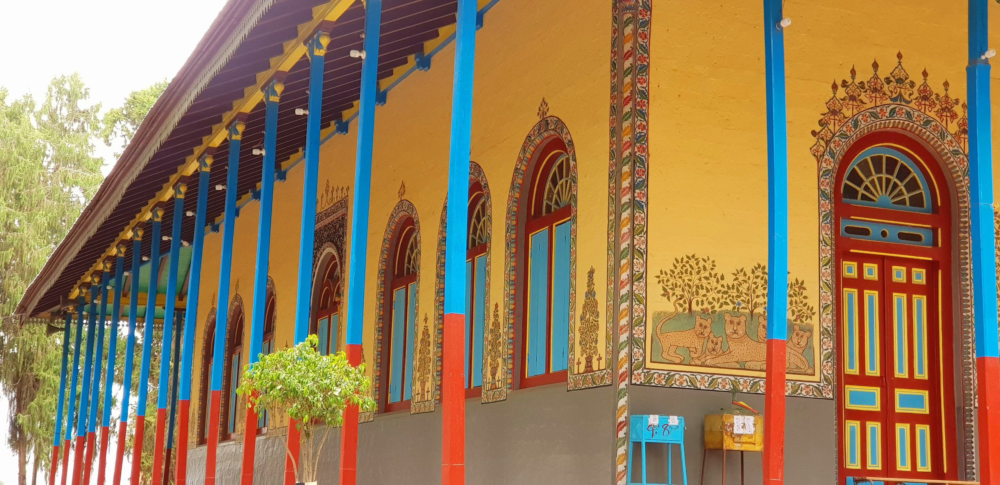 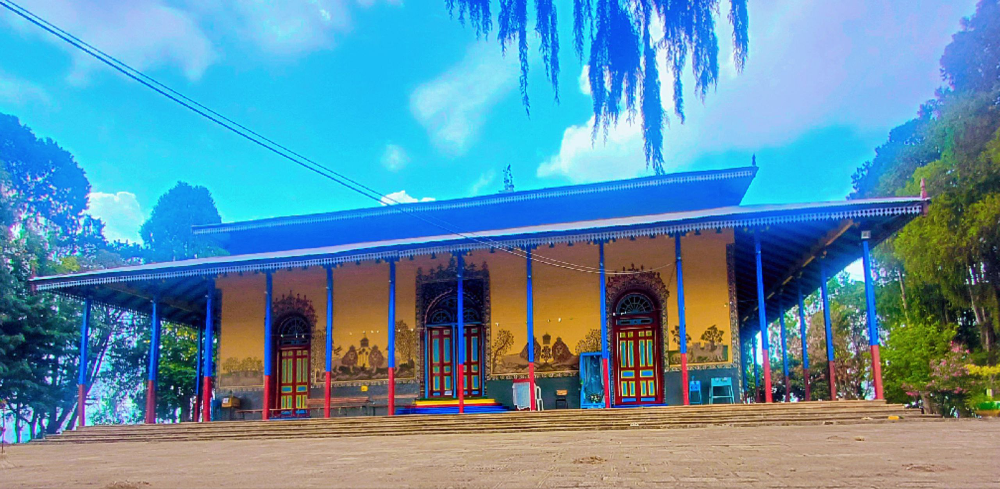💒Reise Adbarat Wogedamat Dagmit Tsion Addis Alem Mariam Church is a historic and spiritually significant site located in Addis Alem, Oromia Region, Ethiopia. Known for its rich history and architectural beauty, the church stands as a testament to Ethiopia's deep-rooted Orthodox Christian traditions.The church was established during the reign of Emperor Menelik II, who envisioned Addis Alem as a potential new capital for Ethiopia. Although the plan to relocate the capital was abandoned, the emperor transformed the area into spiritual hub by constructing this magnificent church. The church is dedicated to the Virgin Mary and holds a special place in Ethiopian Orthodox Christianity.
🎨Architectural Features
-
🏛The Throne Hall, originally intended for royal use , was repurposed as part of the church, adding a regal touch to its spiritual ambiance. The surrounding area is adorned with lush greenery, creating a serene environment for worship and reflection.
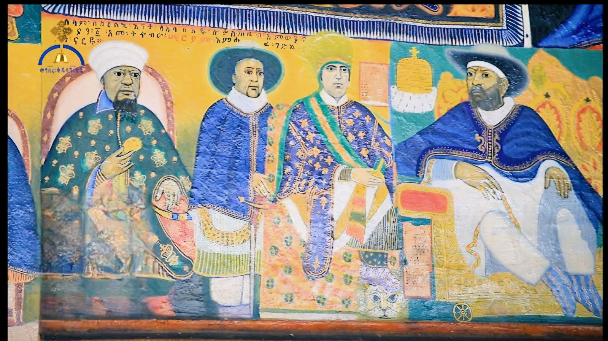 -
Inside, ⛪the walls are adorned with vivid religious paintings, icons, and murals that depict biblical scenes and saints. The use of colorful motifs and ornate detailing creates a deeply spiritual and immersive atmosphere.
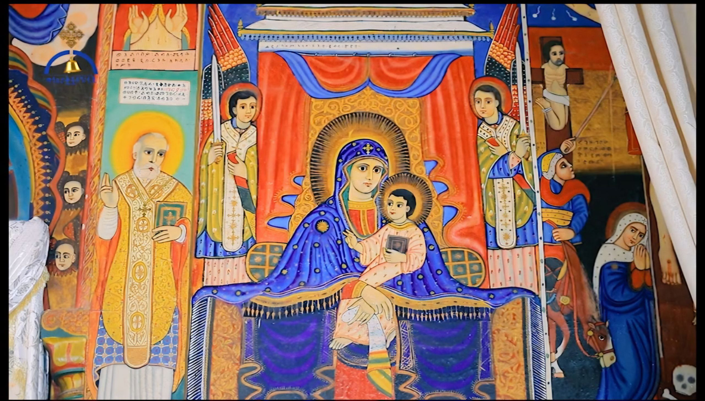 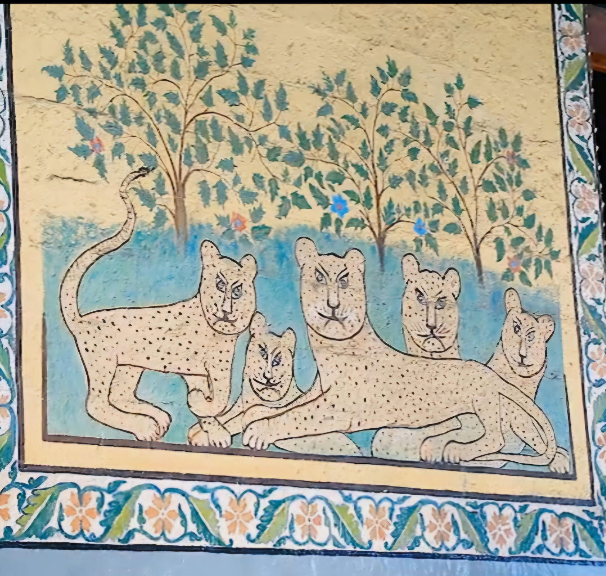
🏰Church Museum
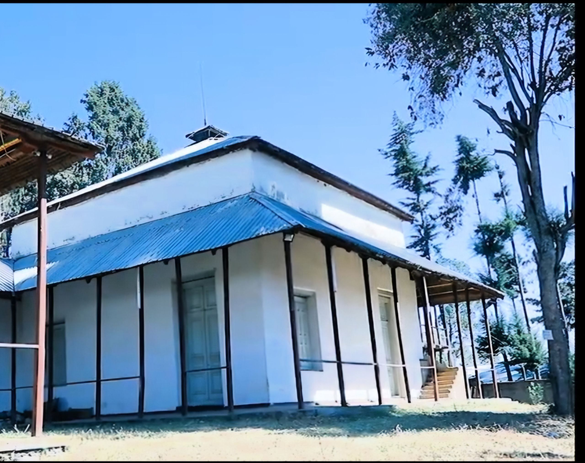-
Located next to the church, the museum houses 👑crowns, robes, and ceremonial items that belonged to Emperor Menelik II and other nobility.There are 🧾religious manuscripts, ✝ ancient crosses, and traditional Ethiopian Orthodox artifacts that reflect the church's spiritual legacy. The museum offers a glimpse into the imperial and eccelesiastical history of the region.
🏡Old Historical Houses
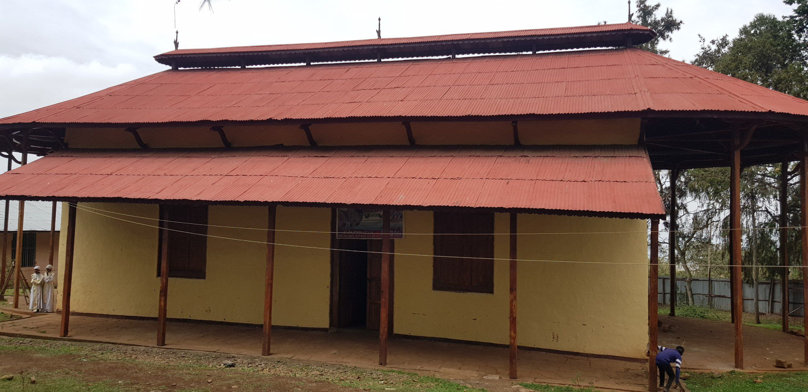
-
The area around the church includes residences and buildings that were originally part of Menelik II's planned palace complex. Some of these structures were built in the early 1900s and reflect a blend of traditional Ethiopian and Europian architectural styles. These houses often feature wooden balconies, stone foundations, and wide verandas, offering a nostalgic view of Ethiopia's transitional era from empire time.
🏫Religious School
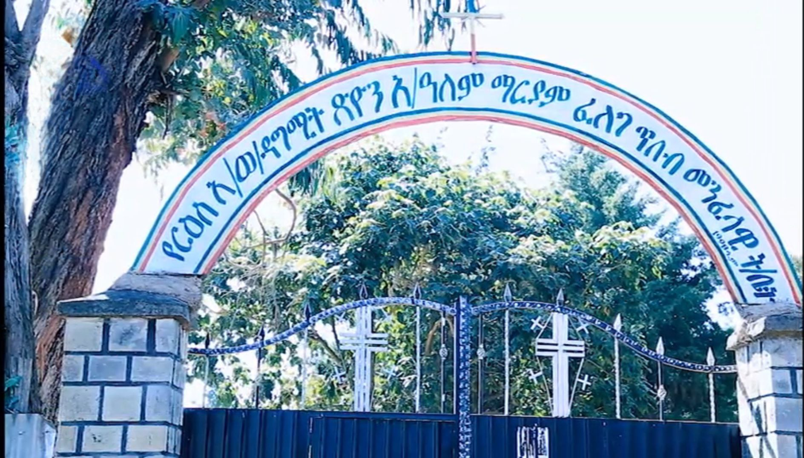 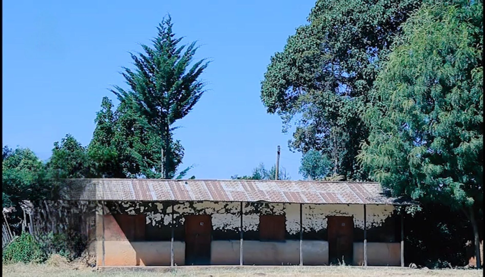 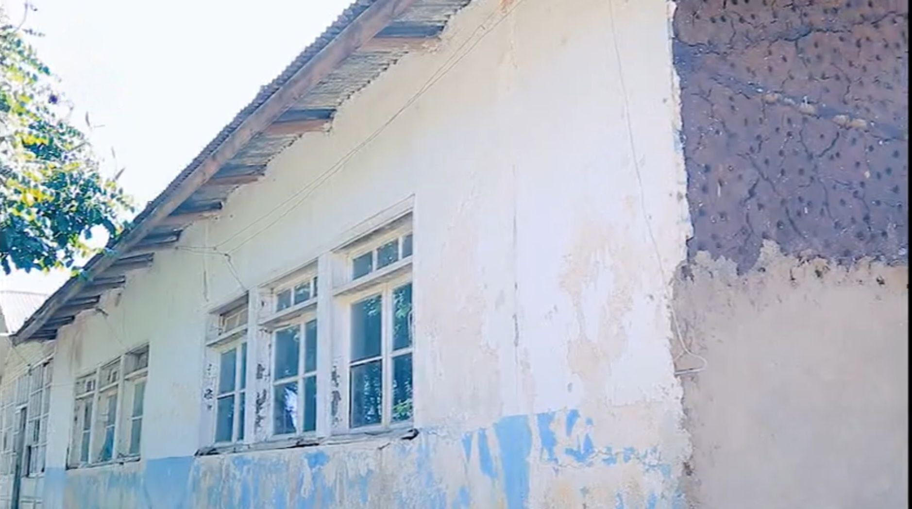 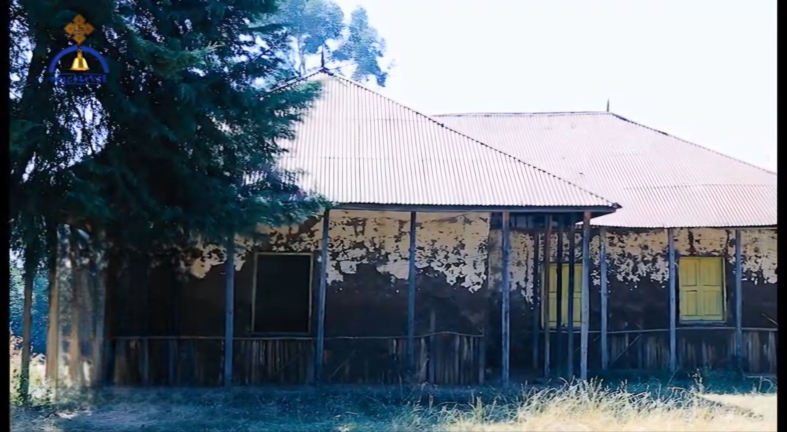-
The school trains debteras in liturgy, hymnography (Zema), biblical studies, and church rituals. It ensures the continuity of Ethiopian Orthodox chant (Mezmur), poetry (Qene), and Ge'ez (ancient liturgical language). Some students may advance to become priests or monks after years of study.
🎉Religious and Cultural Significance
Reise Adbarat Wogedamat Dagmit Zion Addis Alem Mariam Church serves as a pilgrimage site for many Ethiopian Orthodox Christians. It is a place of prayer, celebration, and community gatherings, especially during major religious festivals. The church also houses relics and artifacts that are of great importance to the faith.